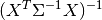

statsmodels.regression.linear_model.GLS¶
-
class
statsmodels.regression.linear_model.GLS(endog, exog, sigma=None, missing='none', hasconst=None, **kwargs)[source]¶ Generalized least squares model with a general covariance structure.
Parameters: endog : array-like
1-d endogenous response variable. The dependent variable.
exog : array-like
A nobs x k array where nobs is the number of observations and k is the number of regressors. An intercept is not included by default and should be added by the user. See
statsmodels.tools.add_constant.sigma : scalar or array
sigma is the weighting matrix of the covariance. The default is None for no scaling. If sigma is a scalar, it is assumed that sigma is an n x n diagonal matrix with the given scalar, sigma as the value of each diagonal element. If sigma is an n-length vector, then sigma is assumed to be a diagonal matrix with the given sigma on the diagonal. This should be the same as WLS.
missing : str
Available options are ‘none’, ‘drop’, and ‘raise’. If ‘none’, no nan checking is done. If ‘drop’, any observations with nans are dropped. If ‘raise’, an error is raised. Default is ‘none.’
hasconst : None or bool
Indicates whether the RHS includes a user-supplied constant. If True, a constant is not checked for and k_constant is set to 1 and all result statistics are calculated as if a constant is present. If False, a constant is not checked for and k_constant is set to 0.
**Attributes**
pinv_wexog : array
pinv_wexog is the p x n Moore-Penrose pseudoinverse of wexog.
cholsimgainv : array
The transpose of the Cholesky decomposition of the pseudoinverse.
df_model : float
p - 1, where p is the number of regressors including the intercept. of freedom.
df_resid : float
Number of observations n less the number of parameters p.
llf : float
The value of the likelihood function of the fitted model.
nobs : float
The number of observations n.
normalized_cov_params : array
p x p array 
results : RegressionResults instance
A property that returns the RegressionResults class if fit.
sigma : array
sigma is the n x n covariance structure of the error terms.
wexog : array
Design matrix whitened by cholsigmainv
wendog : array
Response variable whitened by cholsigmainv
Notes
If sigma is a function of the data making one of the regressors a constant, then the current postestimation statistics will not be correct.
Examples
>>> import numpy as np >>> import statsmodels.api as sm >>> data = sm.datasets.longley.load() >>> data.exog = sm.add_constant(data.exog) >>> ols_resid = sm.OLS(data.endog, data.exog).fit().resid >>> res_fit = sm.OLS(ols_resid[1:], ols_resid[:-1]).fit() >>> rho = res_fit.params
rho is a consistent estimator of the correlation of the residuals from an OLS fit of the longley data. It is assumed that this is the true rho of the AR process data.
>>> from scipy.linalg import toeplitz >>> order = toeplitz(np.arange(16)) >>> sigma = rho**order
sigma is an n x n matrix of the autocorrelation structure of the data.
>>> gls_model = sm.GLS(data.endog, data.exog, sigma=sigma) >>> gls_results = gls_model.fit() >>> print(gls_results.summary())
Attributes
df_modelThe model degree of freedom, defined as the rank of the regressor matrix minus 1 if a constant is included. df_residThe residual degree of freedom, defined as the number of observations minus the rank of the regressor matrix. endog_namesNames of endogenous variables exog_namesNames of exogenous variables Methods
fit([method, cov_type, cov_kwds, use_t])Full fit of the model. from_formula(formula, data[, subset, drop_cols])Create a Model from a formula and dataframe. get_distribution(params, scale[, exog, ...])Returns a random number generator for the predictive distribution. hessian(params)The Hessian matrix of the model information(params)Fisher information matrix of model initialize()loglike(params)Returns the value of the Gaussian log-likelihood function at params. predict(params[, exog])Return linear predicted values from a design matrix. score(params)Score vector of model. whiten(X)GLS whiten method. Methods
fit([method, cov_type, cov_kwds, use_t])Full fit of the model. from_formula(formula, data[, subset, drop_cols])Create a Model from a formula and dataframe. get_distribution(params, scale[, exog, ...])Returns a random number generator for the predictive distribution. hessian(params)The Hessian matrix of the model information(params)Fisher information matrix of model initialize()loglike(params)Returns the value of the Gaussian log-likelihood function at params. predict(params[, exog])Return linear predicted values from a design matrix. score(params)Score vector of model. whiten(X)GLS whiten method. Attributes
df_modelThe model degree of freedom, defined as the rank of the regressor matrix minus 1 if a constant is included. df_residThe residual degree of freedom, defined as the number of observations minus the rank of the regressor matrix. endog_namesNames of endogenous variables exog_namesNames of exogenous variables